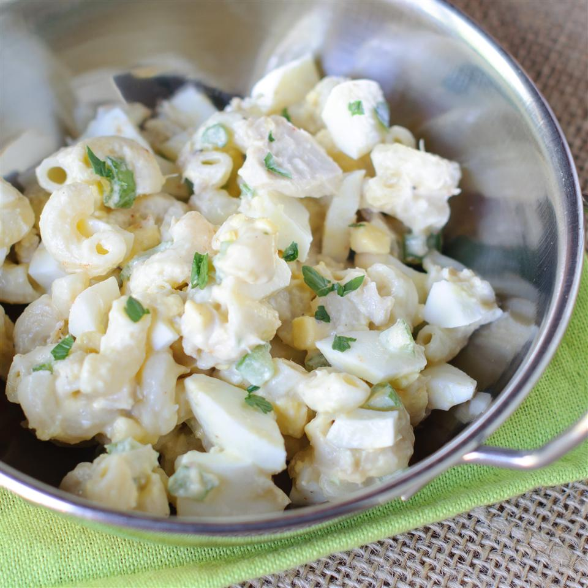

Amelia's Tuna Macaroni Salad

This macaroni salad will remind you of Grandma's.
I love this when the weather is warm. One of the basic comfort foods!
Ingredients
- 1 (12 ounce) package elbow macaroni
- 1 (5 ounce) can tuna, drained
- 2 stalks celery, chopped
- 2 tablespoons chopped sweet onion
- 1 (10 ounce) can baby peas, drained
- 1 cup mayonnaise
- 2 tablespoons sweet pickle relish
- Salt and pepper to taste
- 3 hard-cooked eggs, quartered
- 1 pinch paprika, for garnish
Directions
- Bring a large pot of lightly salted water to a boil.
Add the macaroni, and cook until tender, about 8 minutes.
Drain and rinse under cold running water.
- In a large bowl, stir together the macaroni, tuna, celery, onion and peas.
Mix in the mayonnaise, relish, salt and pepper. Garnish with egg wedges and
a sprinkle of paprika. Cover and chill for at least 1 hour before serving.